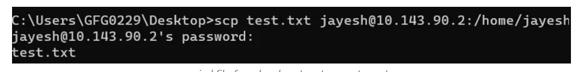

Overview
The scp command securely transfers files between systems over the SSH protocol. It provides encrypted file transfers, ensuring data security during transmission.
What Does SCP Command Do?
The scp command is used to:
- Copy files from a local system to a remote system.
- Copy files from a remote system to a local system.
- Copy files between two remote systems.
Common Use Cases
- Transfer configuration files to a remote server.
- Download backup files from a remote server.
- Copy files securely between remote systems.
Example
# Copy a file to a remote system
scp file.txt user@192.168.1.1:/home/user/
# Copy a file from a remote system
scp user@192.168.1.1:/home/user/file.txt ./file.txt
# Copy a directory recursively
scp -r /local/dir user@192.168.1.1:/remote/dirExample Output

The image above shows an example of the output from the 'scp' command, displaying processes sorted by CPU usage.